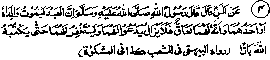
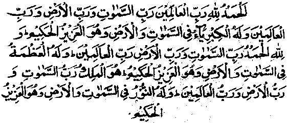

Chapter Three · Section (d): Ahadith concerning maintenance of kinship
3. Atonement for undutiful children, after father’s death

Hadith 4
Rasulullah Sallallaho alaihe wasallam says, "If the parents of a person die, or one of them dies, and he has not been dutiful to them, but he goes on asking forgiveness for them and making other supplications (Du‘aa) for them, Allah Ta'ala will record him as a dutiful son".
Note: How bounteous are the blessings and favours of Allah Ta'ala to His men! Very often, circumstances arise which cause a certain unpleasantness between parents and children, but the parent and children relationship is deep-rooted to allow for permanent estrangement from each other. So, when a man’s father or mother dies, filial love re-asserts itself, he feels deep remorse and is distressed to remember their loving care for himself. Allah Ta’ala has, in His infinite Mercy and Compassion for man, shown a way for redeeming such situations. He has ordained that, if a person prays for Allah’s blessing for his parents after their death, makes ‘Istighfaar’ for them and, after doing a good deed involving expenditure of money Or otherwise, requests Allah to- transfer its rewards to their credit (called 'Eesaal-e-Thawab'),these good deeds will compensate for his failure to fulfil the duties he owed them in their lifetime and he will be recorded as a dutiful son. It is one of the greatest favours of Allah Ta'ala to His men that He has opened a way for the undutiful sons and daughters to atone for their sins, even after the death of their parents when, normally, it is said to be toO late. What a shame would it be if we were too hard-hearted not to avail of this opportunity for atonement! For, there are very few whose behaviour to their parents is always correct and who give their parents their due rights. It is, therefore, advisable that each one of us should make a routine of performing some good deeds regularly and pray to Allah to transfer the blessings earned in this way to the credit of his deceased parents. It would be an excellent routine, in view of its splendid consequences.
A Hadith says that if anyone performs Hajj on behalf of his parents, it is treated as a ‘Hajj-e-Badal’ (i.e. it atones for their failure to perform Fardh Hajj during their life), the glad tidings whereof are conveyed to their souls in the Heavens above, and he is recorded as a dutiful son, even though he may have been undutiful heretofore. Another Hadith says that if a person performs Hajj on' behalf of either of his parents, the father (or mother) receives reward for one Hajj, while his own reward for it is equal to that of a person performing Hajj nine times. Allama Ainee Rahmatullah alaihe has quoted a Hadith in his explanatory notes on Bukhari, to the following effect: Whosoever recites the following Du'aa, and then requests Allah Ta’ala to transfer the reward earned thereby to the credit of his parents, is like one having fulfilled his obligations to them:

All praise be to Allah, the Sustainer of the worlds; the Lord of the heavens and the earth; to Him alone belongs the true greatness in the heavens and in the earth and He alone has supremacy and is Wise. All praise be to Allah, the Lord of the heavens and the Lord of the earth, the Sustainer of the Worlds, to Him alone belongs Majesty in the heavens and in the earth, and He is Supreme and Wise; He alone is the Sovereign, Lord of the heavens and the earth and the Sustainer of the Worlds; to Him alone belongs the celestial light (Nur) of the heavens and the earth and He is the Majestic, the Wise.
Another Hadith relates; What does it cost a person if, having spent something as a Nafl Sadaqah, he prays to Allah Ta'ala to transfer the reward to his parents, provided they be Muslims? For, in that case, they will receive the blessings while his own reward will not decrease. (Karie). According to this Hadith, a man does not need to perform any virtuous deed exclusively for his parents; he should just pray to Allah Ta'ala to transfer to his parents the rewards earned by him by spending fora good cause.
Abdullah Ibne Salaam Radhiallaho anho says: I swear by the name of the Immaculate Being, Who sent Rasulullah Sallallaho alaihe wasallam with the message of truth, it is implied in the Sacred Book of Allah, ‘Do not sever kinship with him who has done a favour to strengthen kinship with your father, for that might cause your loss of faith". It occurs in another Hadith that "Whosoever goes to visit the graves of his parents, or the grave of either of them, on every Friday, his sins will be forgiven and he will be counted among the dutiful". Allama Auzaa'ee Rahmatullah alaihe says, "I have heard it said that, if a person who has been undutiful towards his parents makes ‘Istighfaar’ for them after their death, pays off their debts and does not speak ill of them, he will be counted as dutiful; and that, if a person who has been dutiful towards his parents speaks ill of them after their death, does not pay off the debt they owed, nor makes ‘Istighfaar’ for them, he will be treated as undutiful. (Durre Manthur)